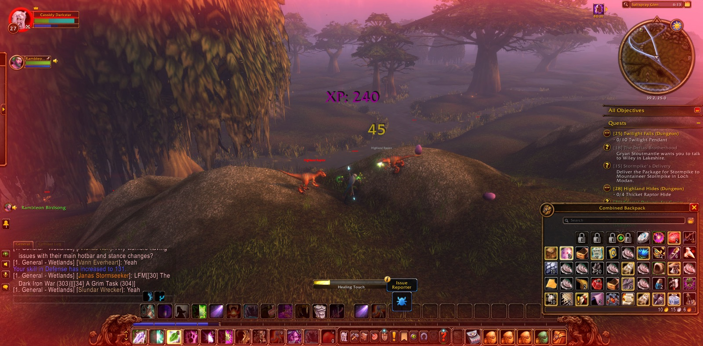
Cassidy Darkstar began in Sundown Marsh, in the Wetlands. He had not gone far before he joined with Rambleon, a hunter, who stayed beside him for nearly the whole of that road. They went by Ironbeard's Tomb and came down into Saltspray Glen. The raptors of the highland kept that ground, and there the night's real work began. The first Highland Raptor fell, then a Highland Scytheclaw. Cassidy stopped more than once to take a picture, as though he wanted to keep the glen and the deeds done there.
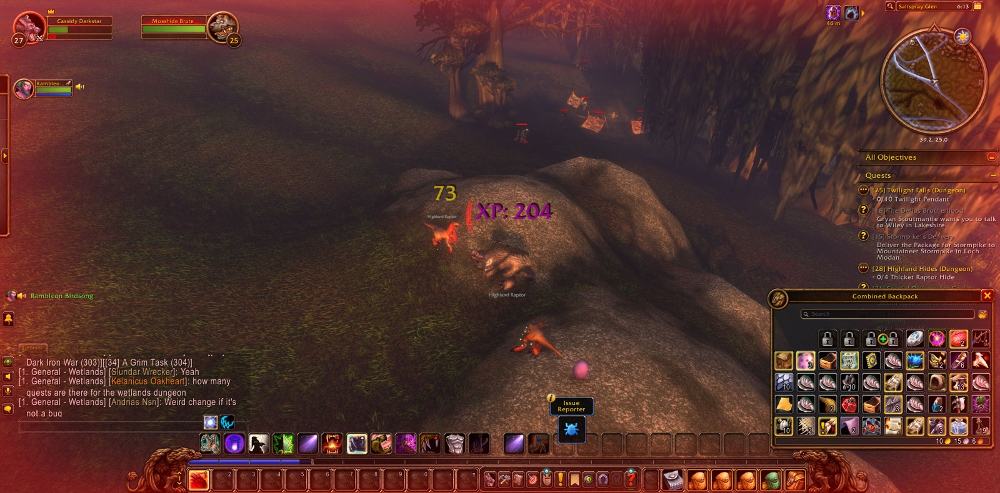
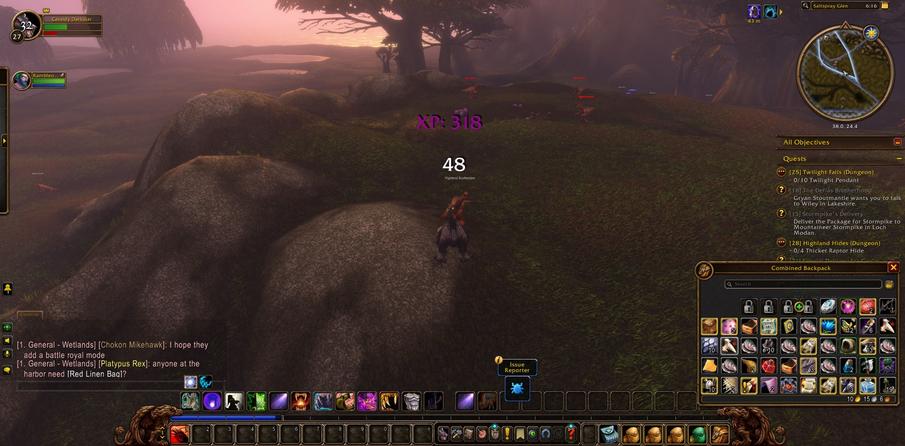
In Saltspray Glen he gathered the twelve Perfect Razormaw Eggs that the errand called Trying Times asked of him. The hunt went on through the glen. Highland Razormaws fell to the two companions more than any other beast, and Highland Lashtails were brought down among them. Their way ran north to the edge of Baradin Bay, where the first Elder Razormaw was overcome, and then turned back into the glen. For a short while Rambleon went his own way, but he soon came back, and the two went on as before. Fen Creepers now began to fall as well. Cassidy took the tenth Razormaw Incisor, and with it the errand called Razormaw Needling was done. Nearly every step of that hunt was marked by another picture taken in the glen.
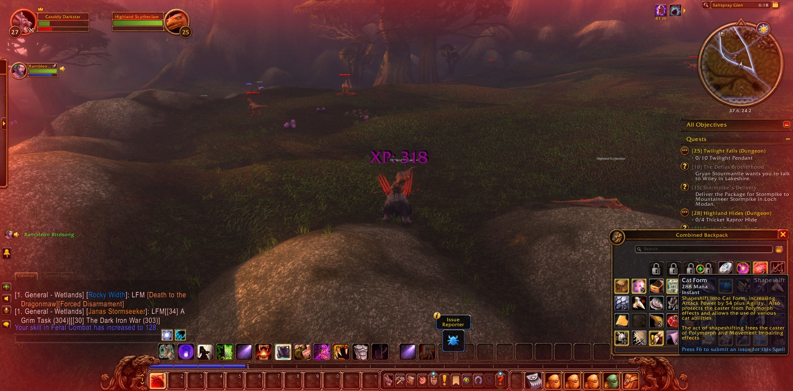
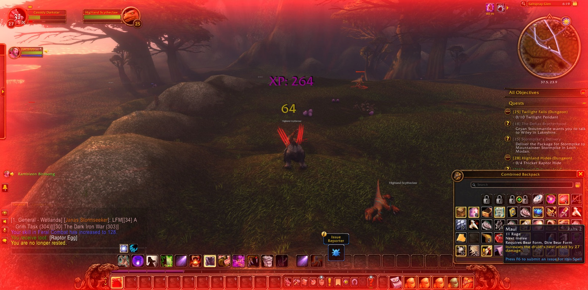
From there they went back across the open Wetlands. The first Wetlands Crocolisk fell on the way, and they passed near Ironbeard's Tomb again. There Cassidy turned in both Razormaw Needling and Trying Times, and he took up a new charge, Death to the Dragonmaw. Then they went down again into Sundown Marsh. The last of twelve Fen Creepers was slain there, which finished the task called Blisters on the Land. He reported it done in The Green Belt and took up two more errands, Carnage and Horrors in the Highland. Fifty-nine foes had fallen along the road, raptor and creeper and crocolisk, and the companions had come through it all without a fall.
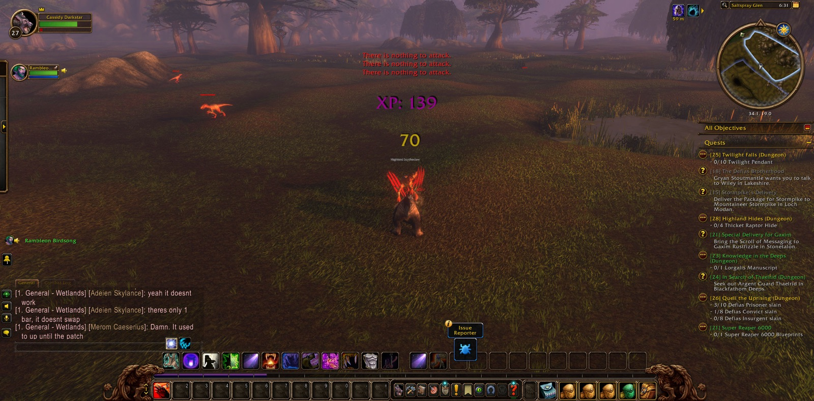
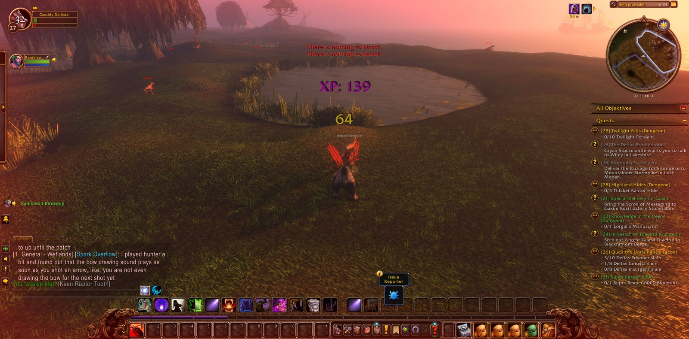
At the last Cassidy went west to the Deepwater Tavern and Menethil Harbor, and from there he went to Nighthaven in Moonglade, the old refuge of his order. He took a picture as he entered. In Moonglade he and Rambleon parted, after a long and useful road together. Three new charges were still in Cassidy's keeping, against the Dragonmaw and the horrors of the highland, and the roads of the Wetlands lay open before him.
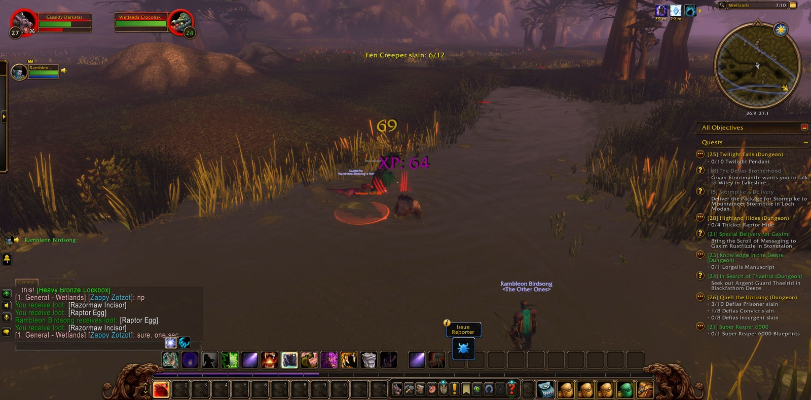
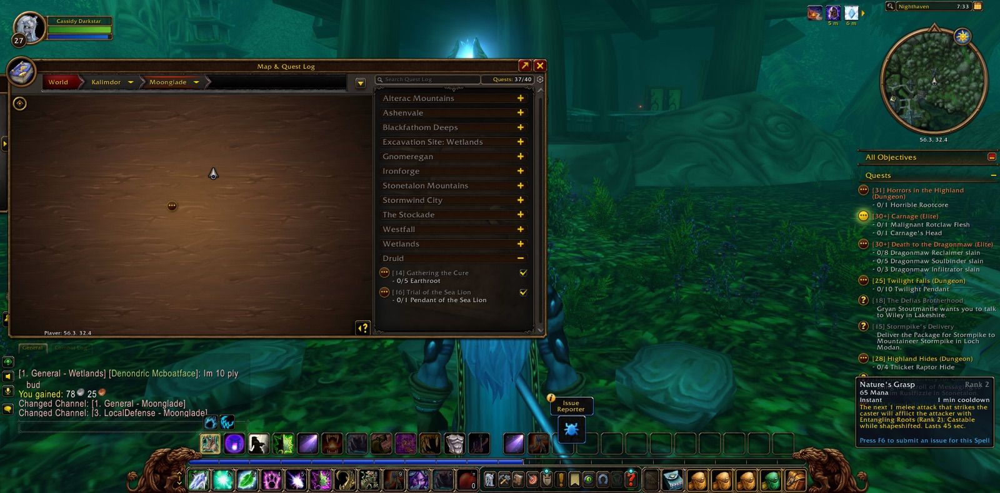
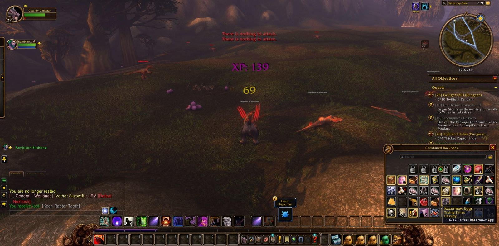
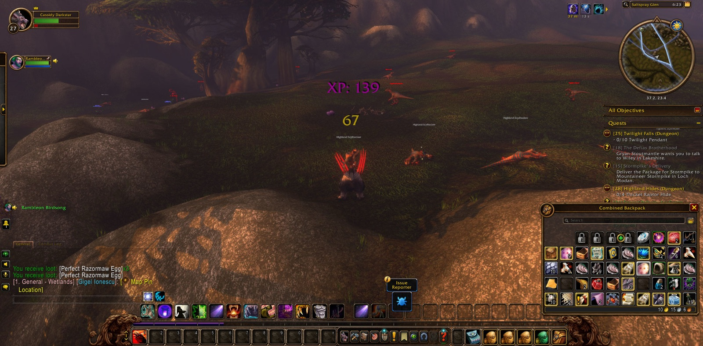
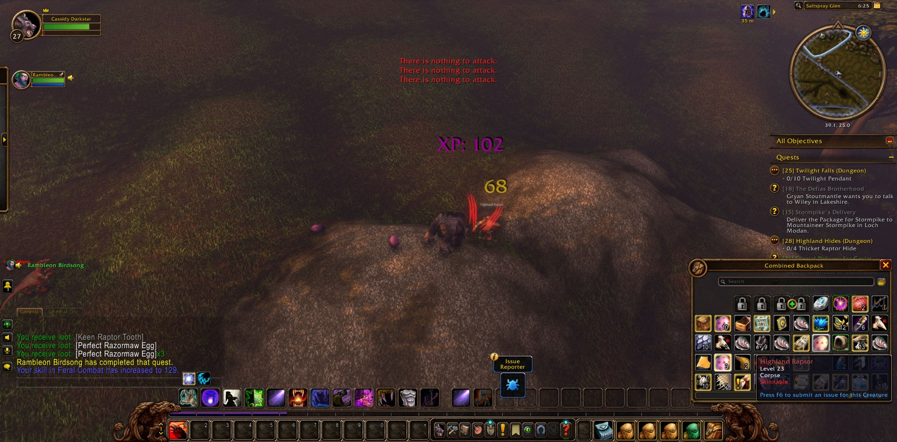
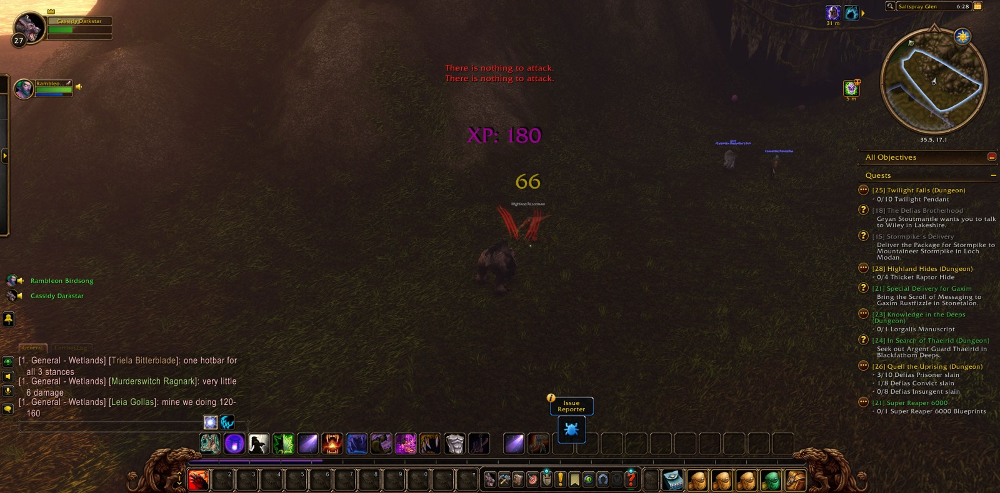
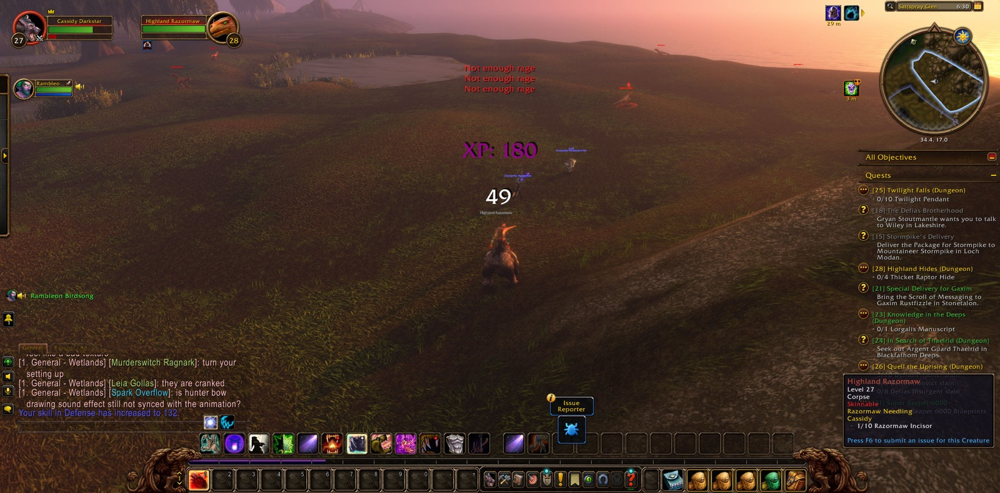
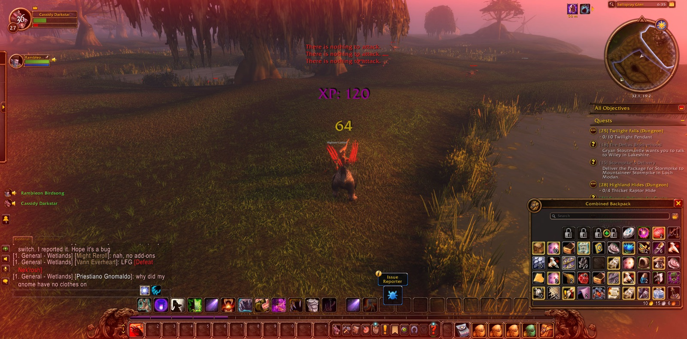